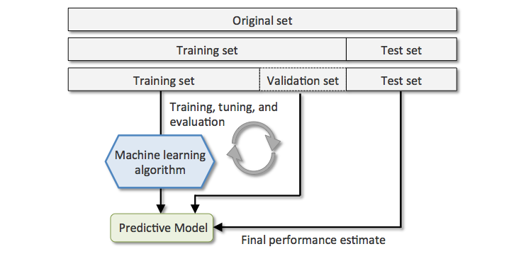
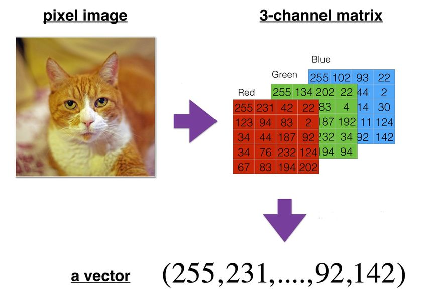

Data manipulation#
Learning objectives#
Discover what tensors are and how to manipulate them with NumPy and PyTorch.
Be able to load and prepare datasets of different types (tabular data, images or videos) for training a Machine Learning model.
Learn how the pandas and scikit-learn libraries can help achieve the previous task.
Environment setup#
# Relax some linting rules not needed here
# pylint: disable=invalid-name,wrong-import-position
import platform
import numpy as np
import matplotlib.pyplot as plt
import pandas as pd
import sklearn
import torch
print(f"Python version: {platform.python_version()}")
print(f"NumPy version: {np.__version__}")
print(f"scikit-learn version: {sklearn.__version__}")
print(f"PyTorch version: {torch.__version__}")
Python version: 3.11.1
NumPy version: 1.26.3
scikit-learn version: 1.3.2
PyTorch version: 2.0.1
# sklearn does not automatically import its subpackages
# https://stackoverflow.com/a/9049246/2380880
from sklearn.datasets import load_sample_images
from sklearn.model_selection import train_test_split
from sklearn.impute import SimpleImputer
from sklearn.preprocessing import MinMaxScaler, StandardScaler, OneHotEncoder
# PyTorch device configuration
if torch.cuda.is_available():
device = torch.device("cuda")
print(f"CUDA GPU {torch.cuda.get_device_name(0)} found :)")
elif torch.backends.mps.is_available():
device = torch.device("mps")
print("Metal GPU found :)")
else:
device = torch.device("cpu")
print("No available GPU :/")
Metal GPU found :)
# Setup plots
# Include matplotlib graphs into the notebook, next to the code
# https://stackoverflow.com/a/43028034/2380880
%matplotlib inline
# Increase default plot size
# https://matplotlib.org/stable/users/explain/customizing.html#matplotlibrc-sample
plt.rcParams["figure.figsize"] = 10, 7.5
# Improve plot quality
%config InlineBackend.figure_format = "retina"
Working with tensors#
Definition#
In the context of AI, a tensor is a set of primitive values sharing the same type (most often numerical), shaped into an array of any number of dimensions. It is a fancy name for a multidimensional array.
Tensors are heavily used by AI algorithms to represent and manipulate information. They are, in particular, the core data structures of Machine Learning.
Tensor properties#
A tensor’s dimension is also called an axis.
A tensor’s rank is its number of axes.
The tensor’s shape describes the number of values along each axis.
In mathematical terms, a rank 0 tensor is a scalar, a rank 1 tensor is a vector and a rank 2 tensor is a matrix.
Warning: rank and dimension are polysemic terms, which can be confusing.
Tensors in Python#
Python offers limited native support for manipulating tensors. Lists can be used to store information, but their mathematical capacities are insufficient for any serious work.
# A vector (rank 1 tensor)
a = [1, 2, 3]
print(a)
# A matrix (rank 2 tensor)
b = [a, [4, 5, 6]]
print(b)
[1, 2, 3]
[[1, 2, 3], [4, 5, 6]]
Dedicated libraries#
Over the years, several tools have been developed to overcome Python’s native limitations.
The most widely used is NumPy, which supports tensors in the form of ndarray objects. It offers a comprehensive set of operations on them, including creating, sorting, selecting, linear algebra and statistical operations.
Tensor management with NumPy#
Creating tensors#
The np.array function creates and returns a new tensor.
The NumPy API contains many functions for creating tensors using predefined values.
def print_tensor_info(t):
"""Print values, number of dimensions and shape of a tensor"""
print(t)
print(f"Dimensions: {t.ndim}")
print(f"Shape: {t.shape}")
# Create a scalar
x = np.array(12)
print_tensor_info(x)
12
Dimensions: 0
Shape: ()
# Create a vector (1D tensor)
x = np.array([1, 2, 3])
print_tensor_info(x)
[1 2 3]
Dimensions: 1
Shape: (3,)
Generating random tensors#
The NumPy API also permits the creation of (pseudo-)randomly valued tensors, using various statistical laws and data types.
# Init a NumPy random number generator
rng = np.random.default_rng()
# Create a 3x4 random matrix (2D tensor) with real values sampled from a uniform distribution
x = rng.uniform(size=(3, 4))
print_tensor_info(x)
[[0.73190816 0.12104948 0.43203815 0.45990366]
[0.48705977 0.80257121 0.05561829 0.39349113]
[0.95655632 0.25370994 0.58680165 0.69616428]]
Dimensions: 2
Shape: (3, 4)
# Create a 3x2x5 3D tensor with integer values sampled from a uniform distribution
x = rng.integers(low=0, high=100, size=(3, 2, 5))
print_tensor_info(x)
[[[34 46 17 50 20]
[34 14 29 97 90]]
[[82 3 39 39 21]
[ 9 40 58 23 60]]
[[55 2 3 88 14]
[ 4 0 87 85 81]]]
Dimensions: 3
Shape: (3, 2, 5)
Shape management#
A common operation on tensors is reshaping: giving it a new shape without changing its data.
The new shape must be compatible with the current one: the new tensor needs to have the same number of elements as the original one.
# Reshape a 3x2 matrix into a 2x3 matrix
x = np.array([[1, 2], [3, 4], [5, 6]])
x_reshaped = x.reshape(2, 3)
print_tensor_info(x_reshaped)
[[1 2 3]
[4 5 6]]
Dimensions: 2
Shape: (2, 3)
# Reshape the previous matrix into a vector
x_reshaped = x.reshape(
6,
)
print_tensor_info(x_reshaped)
[1 2 3 4 5 6]
Dimensions: 1
Shape: (6,)
# Error: incompatible shapes!
# x.reshape(5, )
Indexing and slicing#
Tensors can be indexed and sliced just like regular Python lists.
x = np.array([1, 2, 3])
# Select element at index 1
assert x[1] == 2
# Select elements between indexes 0 (included) and 2 (excluded)
assert np.array_equal(x[0:2], [1, 2])
# Select elements starting at index 1 (included)
assert np.array_equal(x[1:], [2, 3])
# Select last element
assert np.array_equal(x[-1], 3)
# Select all elements but last one
assert np.array_equal(x[:-1], [1, 2])
# Select last 2 elements
assert np.array_equal(x[-2:], [2, 3])
# Select second-to-last element
assert np.array_equal(x[-2:-1], [2])
Tensor axes#
Many tensor operations can be applied along one or several axes. They are indexed starting at 0.
# Create a 2x2 matrix (2D tensor)
x = np.array([[1, 1], [2, 2]])
print(x)
# Summing values on first axis (rows)
print(x.sum(axis=0))
# Summing values on second axis (columns)
print(x.sum(axis=1))
[[1 1]
[2 2]]
[3 3]
[2 4]
Element-wise operations#
These operations are applied independently to each entry in the tensors being considered.
# Element-wise product between two matrices (shapes must be identical)
x = np.array([[1, 2, 3], [3, 2, 1]])
y = np.array([[3, 0, 2], [1, 4, -2]])
z = x * y
print_tensor_info(z)
[[ 3 0 6]
[ 3 8 -2]]
Dimensions: 2
Shape: (2, 3)
Dot product#
On the contrary, operations like dot product combine entries in the input tensors to produce a differently shaped result.
# Dot product between two matrices (shapes must be compatible)
# x has shape (2, 3), y has shape (3, 2): operation is possible
x = np.array([[1, 2, 3], [3, 2, 1]])
y = np.array([[3, 0], [2, 1], [4, -2]])
# alternative syntax: z = x.dot(y)
z = np.dot(x, y)
print_tensor_info(z)
[[19 -4]
[17 0]]
Dimensions: 2
Shape: (2, 2)
Broadcasting#
Broadcasting is a mechanism that allows operations to be performed on tensors of different shapes. Subject to certain constraints, the smaller tensor may be “broadcast” across the larger one so that they have compatible shapes.
Broadcasting provides a efficient means of vectorizing tensor operations.
# Broadcasting between a vector and a scalar
x = np.array([1.0, 2.0])
print(x * 1.6)
[1.6 3.2]
# Broadcasting between a matrix and a vector
x = np.array([[0, 1, 2], [-2, 5, 3]])
y = np.array([1, 2, 3])
z = x + y
print_tensor_info(z)
[[ 1 3 5]
[-1 7 6]]
Dimensions: 2
Shape: (2, 3)
GPU-based tensors#
For all its qualities, NumPy has a limitation which can be critical in some contexts: it only runs on the machine’s CPU.
Among other advantages, newer tools offer support for dedicated high-performance processors like GPUs or TPUs, while providing a NumPy-like API to make onboarding easier. The most prominent ones are currently TensorFlow, PyTorch and JAX.
# Create a 2x2 random PyTorch tensor, trying to store it into the GPU memory
x = torch.rand(size=(2, 2), device=device)
print(x)
tensor([[0.0830, 0.5344],
[0.8013, 0.5799]], device='mps:0')
Loading and exploring data#
Introduction to pandas#
The pandas library is dedicated to data analysis in Python. It greatly facilitates loading, exploring and processing tabular data files.
The primary data structures in pandas are implemented as two classes:
DataFrame, which is quite similar to as a relational data table, with rows and named columns.Series, which represents a single data column. A DataFrame contains one or more Series and a name for each Series.
The DataFrame is a commonly used abstraction for data manipulation.
# Create two data Series
pop = pd.Series({"CAL": 38332521, "TEX": 26448193, "NY": 19651127})
area = pd.Series({"CAL": 423967, "TEX": 695662, "NY": 141297})
# Create a DataFrame contraining the two Series
# The df_ prefix is used to distinguish pandas dataframes from plain NumPy arrays
df_poprep = pd.DataFrame({"population": pop, "area": area})
print(df_poprep)
population area
CAL 38332521 423967
TEX 26448193 695662
NY 19651127 141297
Loading a tabular dataset#
When describing tabular information, most datasets are stored as a CSV (Comma-Separated Values) text file.
The pd.read_csv function can load a CSV file into a DataFrame from either a local path or a URL.
The following code loads a dataset which was extracted from a Kaggle competition.
# Load a CSV file into a DataFrame
# Data comes from this Kaggle competition:
df_olympics = pd.read_csv(
"https://raw.githubusercontent.com/bpesquet/ainotes/master/data/athlete_events.csv"
)
Exploring tabular data#
Once a dataset is loaded into a DataFrame, many operations can be applied to it for visualization or transformation purposes. For more details, see the 10 minutes to pandas tutorial.
Let’s use pandas to perform the very first steps of what is often called Exploratory Data Analysis.
# Print dataset shape (rows x columns)
print(f"df_olympics: {df_olympics.shape}")
df_olympics: (271116, 15)
# Print a concise summary of the dataset
df_olympics.info()
<class 'pandas.core.frame.DataFrame'>
RangeIndex: 271116 entries, 0 to 271115
Data columns (total 15 columns):
# Column Non-Null Count Dtype
--- ------ -------------- -----
0 ID 271116 non-null int64
1 Name 271116 non-null object
2 Sex 271116 non-null object
3 Age 261642 non-null float64
4 Height 210945 non-null float64
5 Weight 208241 non-null float64
6 Team 271116 non-null object
7 NOC 271116 non-null object
8 Games 271116 non-null object
9 Year 271116 non-null int64
10 Season 271116 non-null object
11 City 271116 non-null object
12 Sport 271116 non-null object
13 Event 271116 non-null object
14 Medal 39783 non-null object
dtypes: float64(3), int64(2), object(10)
memory usage: 31.0+ MB
# Print the first 10 rows of the dataset
df_olympics.head(n=10)
| ID | Name | Sex | Age | Height | Weight | Team | NOC | Games | Year | Season | City | Sport | Event | Medal | |
|---|---|---|---|---|---|---|---|---|---|---|---|---|---|---|---|
| 0 | 1 | A Dijiang | M | 24.0 | 180.0 | 80.0 | China | CHN | 1992 Summer | 1992 | Summer | Barcelona | Basketball | Basketball Men's Basketball | NaN |
| 1 | 2 | A Lamusi | M | 23.0 | 170.0 | 60.0 | China | CHN | 2012 Summer | 2012 | Summer | London | Judo | Judo Men's Extra-Lightweight | NaN |
| 2 | 3 | Gunnar Nielsen Aaby | M | 24.0 | NaN | NaN | Denmark | DEN | 1920 Summer | 1920 | Summer | Antwerpen | Football | Football Men's Football | NaN |
| 3 | 4 | Edgar Lindenau Aabye | M | 34.0 | NaN | NaN | Denmark/Sweden | DEN | 1900 Summer | 1900 | Summer | Paris | Tug-Of-War | Tug-Of-War Men's Tug-Of-War | Gold |
| 4 | 5 | Christine Jacoba Aaftink | F | 21.0 | 185.0 | 82.0 | Netherlands | NED | 1988 Winter | 1988 | Winter | Calgary | Speed Skating | Speed Skating Women's 500 metres | NaN |
| 5 | 5 | Christine Jacoba Aaftink | F | 21.0 | 185.0 | 82.0 | Netherlands | NED | 1988 Winter | 1988 | Winter | Calgary | Speed Skating | Speed Skating Women's 1,000 metres | NaN |
| 6 | 5 | Christine Jacoba Aaftink | F | 25.0 | 185.0 | 82.0 | Netherlands | NED | 1992 Winter | 1992 | Winter | Albertville | Speed Skating | Speed Skating Women's 500 metres | NaN |
| 7 | 5 | Christine Jacoba Aaftink | F | 25.0 | 185.0 | 82.0 | Netherlands | NED | 1992 Winter | 1992 | Winter | Albertville | Speed Skating | Speed Skating Women's 1,000 metres | NaN |
| 8 | 5 | Christine Jacoba Aaftink | F | 27.0 | 185.0 | 82.0 | Netherlands | NED | 1994 Winter | 1994 | Winter | Lillehammer | Speed Skating | Speed Skating Women's 500 metres | NaN |
| 9 | 5 | Christine Jacoba Aaftink | F | 27.0 | 185.0 | 82.0 | Netherlands | NED | 1994 Winter | 1994 | Winter | Lillehammer | Speed Skating | Speed Skating Women's 1,000 metres | NaN |
# Print 5 random samples
df_olympics.sample(n=5)
| ID | Name | Sex | Age | Height | Weight | Team | NOC | Games | Year | Season | City | Sport | Event | Medal | |
|---|---|---|---|---|---|---|---|---|---|---|---|---|---|---|---|
| 248569 | 124434 | Adrianus Aloysius Jacobus "Adrie" van der Poel | M | 21.0 | 181.0 | 70.0 | Netherlands | NED | 1980 Summer | 1980 | Summer | Moskva | Cycling | Cycling Men's 100 kilometres Team Time Trial | NaN |
| 230038 | 115485 | Hestrie Storbeck-Cloete (-Els) | F | 25.0 | 185.0 | 68.0 | South Africa | RSA | 2004 Summer | 2004 | Summer | Athina | Athletics | Athletics Women's High Jump | Silver |
| 28864 | 14942 | Joo Carlos Brenha Alves Pereira | M | 34.0 | 193.0 | 88.0 | Portugal | POR | 2004 Summer | 2004 | Summer | Athina | Beach Volleyball | Beach Volleyball Men's Beach Volleyball | NaN |
| 56603 | 28995 | Ren Dobrinovitz | M | NaN | NaN | NaN | Belgium | BEL | 1906 Summer | 1906 | Summer | Athina | Wrestling | Wrestling Men's Lightweight, Greco-Roman | NaN |
| 194136 | 97452 | Jari Markus Puikkonen | M | 28.0 | 180.0 | 68.0 | Finland | FIN | 1988 Winter | 1988 | Winter | Calgary | Ski Jumping | Ski Jumping Men's Large Hill, Team | Gold |
# Print descriptive statistics for all numerical attributes
df_olympics.describe()
| ID | Age | Height | Weight | Year | |
|---|---|---|---|---|---|
| count | 271116.000000 | 261642.000000 | 210945.000000 | 208241.000000 | 271116.000000 |
| mean | 68248.954396 | 25.556898 | 175.338970 | 70.702393 | 1978.378480 |
| std | 39022.286345 | 6.393561 | 10.518462 | 14.348020 | 29.877632 |
| min | 1.000000 | 10.000000 | 127.000000 | 25.000000 | 1896.000000 |
| 25% | 34643.000000 | 21.000000 | 168.000000 | 60.000000 | 1960.000000 |
| 50% | 68205.000000 | 24.000000 | 175.000000 | 70.000000 | 1988.000000 |
| 75% | 102097.250000 | 28.000000 | 183.000000 | 79.000000 | 2002.000000 |
| max | 135571.000000 | 97.000000 | 226.000000 | 214.000000 | 2016.000000 |
# Print descriptive statistics for all non-numerical attributes
df_olympics.describe(include=["object", "bool"])
| Name | Sex | Team | NOC | Games | Season | City | Sport | Event | Medal | |
|---|---|---|---|---|---|---|---|---|---|---|
| count | 271116 | 271116 | 271116 | 271116 | 271116 | 271116 | 271116 | 271116 | 271116 | 39783 |
| unique | 134732 | 2 | 1184 | 230 | 51 | 2 | 42 | 66 | 765 | 3 |
| top | Robert Tait McKenzie | M | United States | USA | 2000 Summer | Summer | London | Athletics | Football Men's Football | Gold |
| freq | 58 | 196594 | 17847 | 18853 | 13821 | 222552 | 22426 | 38624 | 5733 | 13372 |
# Print the number of samples by sport
df_olympics["Sport"].value_counts()
Sport
Athletics 38624
Gymnastics 26707
Swimming 23195
Shooting 11448
Cycling 10859
...
Racquets 12
Jeu De Paume 11
Roque 4
Basque Pelota 2
Aeronautics 1
Name: count, Length: 66, dtype: int64
# Print rounded average age for women
age_mean = df_olympics[df_olympics["Sex"] == "F"]["Age"].mean()
print(f"{age_mean:.0f}")
24
# Print percent of athletes for some countries
athletes_count = df_olympics.shape[0]
for country in ["USA", "FRA", "GBR", "GER"]:
percent = (df_olympics["NOC"] == country).sum() / athletes_count
print(f"Athletes from {country}: {percent*100:.2f}%")
Athletes from USA: 6.95%
Athletes from FRA: 4.71%
Athletes from GBR: 4.52%
Athletes from GER: 3.63%
Loading images#
Digital images are stored using either the bitmap format (an array of color values for all individual pixels in the image) or the vector format (a description of the elementary shapes in the image).
Bitmap images can be easily manipulated as tensors. Each pixel color is typically expressed using a combination of the three primary colors: red, green and blue.
# Load sample images provided by scikit-learn into a NumPy array
images = np.asarray(load_sample_images().images)
# Load the last sample image
sample_image = images[-1]
# Show image
plt.imshow(sample_image)
print(f"Image: {images.shape}")
print(f"Sample image: {sample_image.shape}")
print(f"Sample pixel: {sample_image[225, 300]}")
Image: (2, 427, 640, 3)
Sample image: (427, 640, 3)
Sample pixel: [219 78 60]
Preparing data for training#
A mandatory step#
In Machine Learning, the chosen dataset has to be carefully prepared before using it to train a model. This can have a major impact on the outcome of the training process.
This important task, sometimes called data preprocessing, might involve:
Splitting data between training, validation and test sets.
Reshaping data.
Removing superflous features (if any).
Adding missing values.
Scaling data.
Transforming values into numeric form.
Augmenting data.
Engineering new features.
Data splitting#
Once trained, a ML model must be able to generalize (perform well with new data). In order to assert this ability, data is always split into two or three sets before training:
Training set (typically 80% or more): fed to the model during training.
Validation set: used to tune the model without biasing it in favor of the test set.
Test set: used to check the final model’s performance on unseen data.

# Demonstrate the use of scikit-learn's train_test_split for splitting a dataset
# Create a random 30x4 matrix (fictitious inputs) and a random 30x1 vector (fictitious results)
x = np.random.rand(30, 4)
y = np.random.rand(30)
print(f"x: {x.shape}. y: {y.shape}")
# Split fictitious dataset between training and test sets, using a 75/25 ratio
# A unique call to train_test_split is mandatory to maintain inputs/target correspondance between samples
# https://scikit-learn.org/stable/modules/generated/sklearn.model_selection.train_test_split.html
x_train, x_test, y_train, y_test = train_test_split(x, y, test_size=0.25)
print(f"x_train: {x_train.shape}. y_train: {y_train.shape}")
print(f"x_test: {x_test.shape}. y_test: {y_test.shape}")
x: (30, 4). y: (30,)
x_train: (22, 4). y_train: (22,)
x_test: (8, 4). y_test: (8,)
Image and video reshaping#
A bitmap image can be represented as a 3D multidimensional array of dimensions \(height \times width \times color\_channels\).
A video can be represented as a 4D multidimensional array of dimensions \(frames \times height \times width \times color\_channels\).
They have to be reshaped, or more precisely flattened in that case, into a vector (1D tensor) before being fed to most ML algorithms.

# Flatten the image, which is a 3D tensor, into a vector (1D tensor)
flattened_image = sample_image.reshape((427 * 640 * 3,))
# Alternative syntaxes to achieve the same result
# -1 means the new dimension is inferred from current dimensions
# Diference between flatten() and ravel() is explained here:
# https://numpy.org/doc/stable/user/absolute_beginners.html#reshaping-and-flattening-multidimensional-arrays
flattened_image = sample_image.reshape((-1,))
flattened_image = sample_image.ravel()
flattened_image = sample_image.flatten()
print(f"Flattened image: {flattened_image.shape}")
Flattened image: (819840,)
Handling of missing values#
Most ML algorithms cannot work with missing values in features.
Depending on the percentage of missing data, three options exist:
remove the corresponding data samples;
remove the whole feature(s);
replace the missing values (using 0, the mean, the median or something more meaningful in the context).
# Demonstrate the use of scikit-learn's SimpleImputer for handling missing values
# Replace missing values with column-wise mean
imputer = SimpleImputer(strategy="mean")
print(imputer.fit_transform([[7, 2, np.nan], [4, np.nan, 6], [10, 5, 9]]))
# Replace missing values with "Unknown"
imputer = SimpleImputer(strategy="constant", missing_values=None, fill_value="Unknown")
print(imputer.fit_transform([["M"], ["M"], [None], ["F"], [None]]))
[[ 7. 2. 7.5]
[ 4. 3.5 6. ]
[10. 5. 9. ]]
[['M']
['M']
['Unknown']
['F']
['Unknown']]
Feature scaling#
Most ML algorithms work best when all features have a similar scale. Several solutions exist:
Min-Max scaling: features are shifted and rescaled to the \([0,1]\) range by substracting the
minvalue and dividing by(max-min)on the first axis.Standardization: features are centered (substracted by their mean) then reduced (divided by their standard deviation) on the first axis. All resulting features have a mean of 0 and a standard deviation of 1.
# Demonstrate the use of scikit-learn's MinMaxScaler to rescale values
# Generate a random 3x4 tensor with integer values between 1 and 10
x = np.random.randint(1, 10, (3, 4))
print(x)
# Compute min and max then scale tensor in one operation
x_scaled = MinMaxScaler().fit_transform(x)
print(x_scaled)
print(f"Minimum: {x_scaled.min(axis=0)}. Maximum: {x_scaled.max(axis=0)}")
[[7 9 9 3]
[5 5 4 8]
[8 1 1 7]]
[[0.66666667 1. 1. 0. ]
[0. 0.5 0.375 1. ]
[1. 0. 0. 0.8 ]]
Minimum: [0. 0. 0. 0.]. Maximum: [1. 1. 1. 1.]
# Demonstrate the use of scikit-learn's StandardScaler to standardize values
# Generate a random (3,4) tensor with integer values between 1 and 10
x = np.random.randint(1, 10, (3, 4))
print(x)
# Center and reduce data
scaler = StandardScaler().fit(x)
print(scaler.mean_)
x_scaled = scaler.transform(x)
print(x_scaled)
# New mean is 0. New standard deviation is 1
print(f"Mean: {x_scaled.mean()}. Std: {x_scaled.std()}")
[[1 4 7 6]
[9 7 2 8]
[7 7 2 3]]
[5.66666667 6. 3.66666667 5.66666667]
[[-1.37281295 -1.41421356 1.41421356 0.16222142]
[ 0.98058068 0.70710678 -0.70710678 1.13554995]
[ 0.39223227 0.70710678 -0.70710678 -1.29777137]]
Mean: -3.700743415417188e-17. Std: 0.9999999999999999
Feature scaling and training/test sets#
In order to avoid information leakage, the test set must be scaled with values calculated on the training set.
# Compute mean and std on training set
scaler = StandardScaler().fit(x_train)
# Standardize training and test sets, using mean and std computed on training set
x_train_scaled = scaler.transform(x_train)
x_test_scaled = scaler.transform(x_test)
print(f"Train mean: {x_train_scaled.mean(axis=0)}")
print(f"Train std: {x_train_scaled.std(axis=0)}")
print(f"Test mean: {x_test_scaled.mean(axis=0)}")
print(f"Test std: {x_test_scaled.std(axis=0)}")
Train mean: [ 3.58299249e-16 9.58828976e-17 2.01858732e-17 -5.14739766e-16]
Train std: [1. 1. 1. 1.]
Test mean: [-0.28466719 0.90100926 0.24707349 -0.11696319]
Test std: [0.94736355 0.84876086 0.95134111 0.84302027]
Image and video scaling#
Individual pixel values for images and videos are typically integers in the \([0,255]\) range. This is not ideal for most ML algorithms.
Dividing them by \(255.0\) to obtain floats into the \([0,1]\) range is a common practice.
# Scaling sample image pixels between 0 and 1
scaled_image = sample_image / 255.0
# Check that all values are in the [0,1] range
assert scaled_image.min() >= 0
assert scaled_image.max() <= 1
Encoding of categorical features#
Some features or targets may come as discrete rather than continuous values. Moreover, these discrete values might be strings. ML models are only able to manage numerical-only data.
A solution is to apply one-of-K encoding, also named dummy encoding or one-hot encoding. Each categorical feature with K possible values is transformed into a vector of K binary features, with one of them 1 and all others 0.
Note: using arbitrary integer values rather than binary vectors would create a proximity relationship between the new features, which could confuse the model during training.
# Demonstrate the use of scikit-learn's OneHotEncoder to one-hot encode categorical features
# Create a categorical variable with 3 different values
x = [["GOOD"], ["AVERAGE"], ["GOOD"], ["POOR"], ["POOR"]]
# Encoder input must be a matrix
# Output will be a sparse matrix where each column corresponds to one possible value of one feature
encoder = OneHotEncoder().fit(x)
x_hot = encoder.transform(x).toarray()
print(x_hot)
print(encoder.categories_)
[[0. 1. 0.]
[1. 0. 0.]
[0. 1. 0.]
[0. 0. 1.]
[0. 0. 1.]]
[array(['AVERAGE', 'GOOD', 'POOR'], dtype=object)]
# Demonstrate one-hot encoding of categorical features given as integers
# Generate a (5,1) tensor with integer values between 0 and 9
x = np.random.randint(0, 9, (5, 1))
print(x)
# Encoder input must be a matrix
# Output will be a sparse matrix where each column corresponds to one possible value of one feature
x_hot = OneHotEncoder().fit_transform(x).toarray()
print(x_hot)
[[8]
[8]
[7]
[0]
[2]]
[[0. 0. 0. 1.]
[0. 0. 0. 1.]
[0. 0. 1. 0.]
[1. 0. 0. 0.]
[0. 1. 0. 0.]]
One-hot encoding and training/test sets#
Depending on value distribution between training and test sets, some categories might appear only in one set.
The best solution is to one-hot encode based on the training set categories, ignoring test-only categories.
x_train = [["Blue"], ["Red"], ["Blue"], ["Green"]]
# "Yellow" is not present in training set
x_test = [
["Red"],
["Yellow"],
["Green"],
["Yellow"],
]
# Using categories from train set, ignoring unkwown categories
encoder = OneHotEncoder(handle_unknown="ignore").fit(x_train)
print(encoder.transform(x_train).toarray())
print(encoder.categories_)
# Unknown categories will result in a binary vector will all zeros
print(encoder.transform(x_test).toarray())
[[1. 0. 0.]
[0. 0. 1.]
[1. 0. 0.]
[0. 1. 0.]]
[array(['Blue', 'Green', 'Red'], dtype=object)]
[[0. 0. 1.]
[0. 0. 0.]
[0. 1. 0.]
[0. 0. 0.]]
x = [["M"], ["M"], [None], ["F"]]
# Replace missing values with constant
print(
SimpleImputer(
strategy="constant", missing_values=None, fill_value="Unknown"
).fit_transform(x)
)
[['M']
['M']
['Unknown']
['F']]
Data augmentation#
Data augmentation is the process of enriching a dataset by adding new samples, slightly modified copies of existing data or newly created synthetic data.

Feature engineering#
Feature engineering is the process of preparing the proper input features, in order to facilitate the learning task. The problem is made easier by expressing it in a simpler way. This usually requires a good domain knowledge.
The ability of deep neural networks to discover useful features by themselves has somewhat reduced the criticality of feature engineering. Nevertheless, it remains important in order to solve problems more elegantly and with fewer data.
Example (taken from the book Deep Learning with Python): the task of learning the time of day from a clock is far easier with engineered features rather than raw clock images.